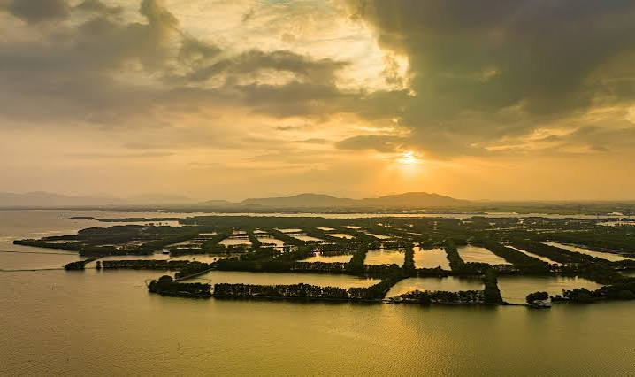

Tháp Đôi
Tháp Đôi là cụm hai ngọn tháp Chăm Pa nằm ngay trong thành phố, được xây vào khoảng thế kỷ 12 đến 13. Hai tháp đứng cạnh nhau, xây bằng gạch nung, tháp phía Bắc cao hơn tháp phía Nam. Vì nằm gần trung tâm nên đây là điểm dễ ghé nhất trong chuyến đi.


Đầm Thị Nại
Đầm Thị Nại là vùng đầm nước lợ rộng ở phía Tây Nam thành phố. Cầu Thị Nại dài hơn 2 km bắc qua đầm, nối thành phố với bán đảo Phương Mai. Ở đây có làng chài, rừng ngập mặn và những buổi hoàng hôn rất đẹp trên mặt nước.
